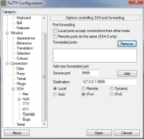
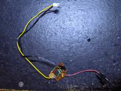

Also on Steve's Blog

Training SpamAssassin's …
One of the problems with bayes filters is that you need to train them on both ham …

Unison on Windows
I use it to sync what could be called my network drive to the netbook on the run. …

CyberPower OLS1000E UPS fan replacements
WARNING: Messing about in the insides of a UPS can expose you to mains …
OpenVPN OTP with a Yubikey
From version 2.4.3 of OpenVPN onwards, this is now possible using a …